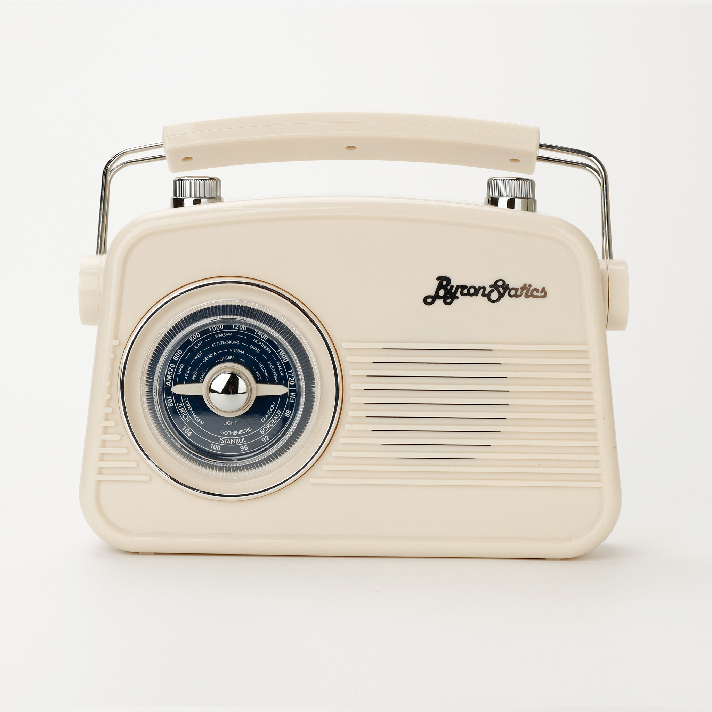
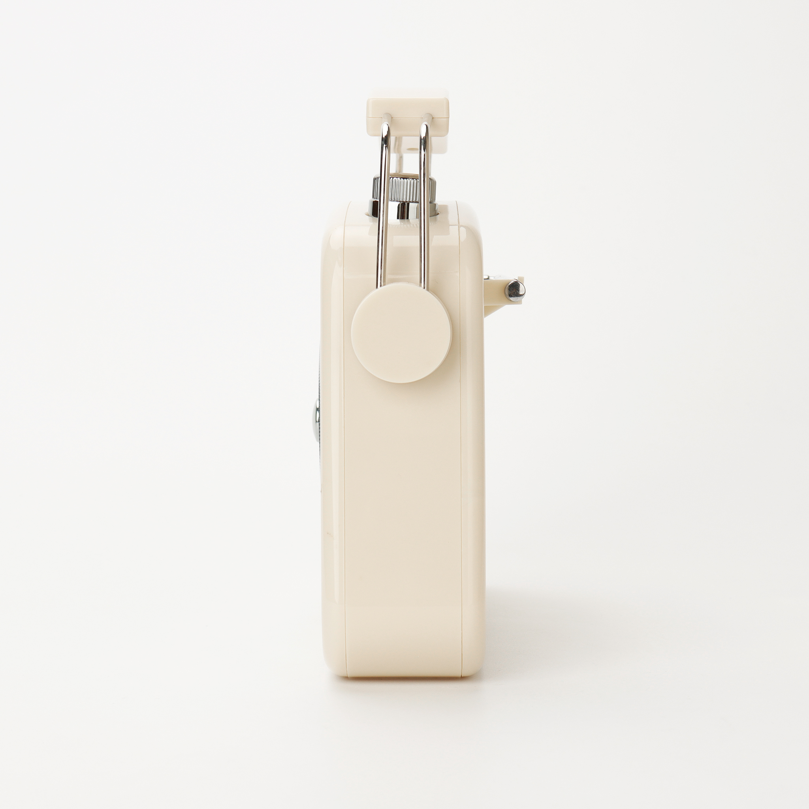
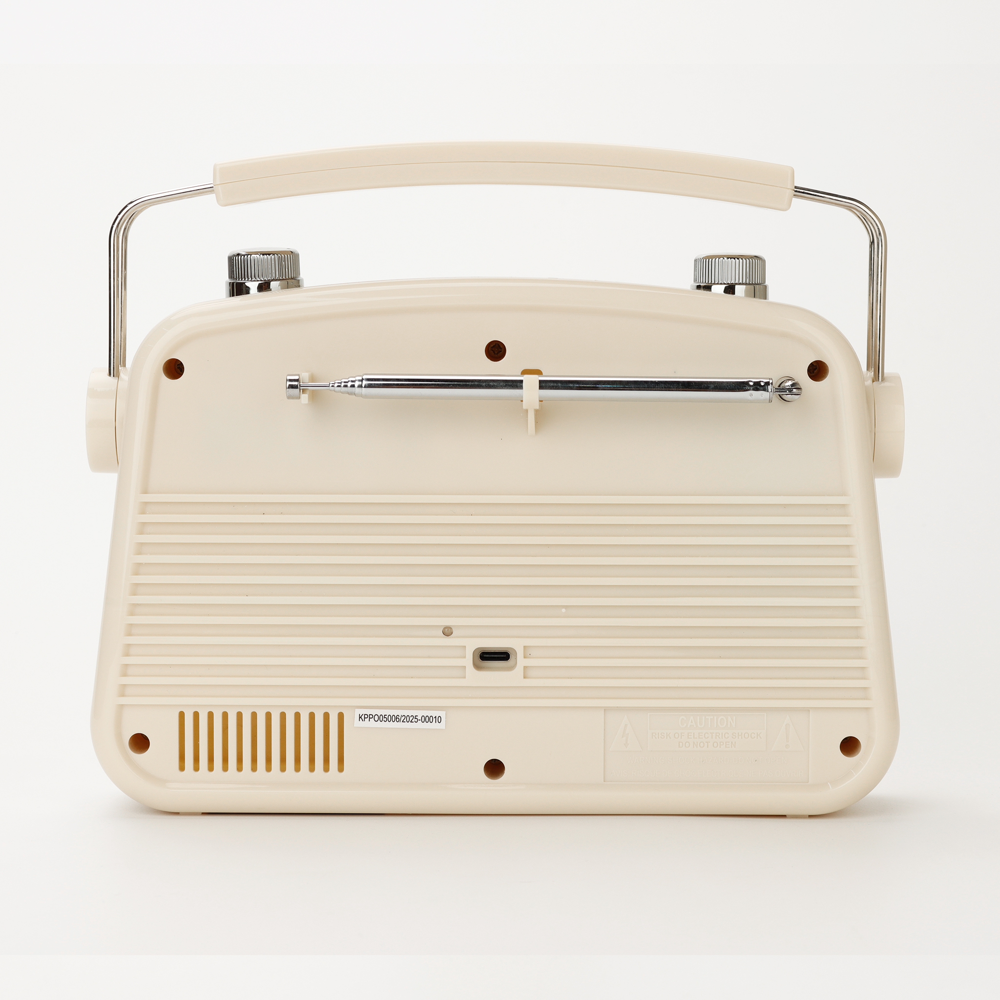
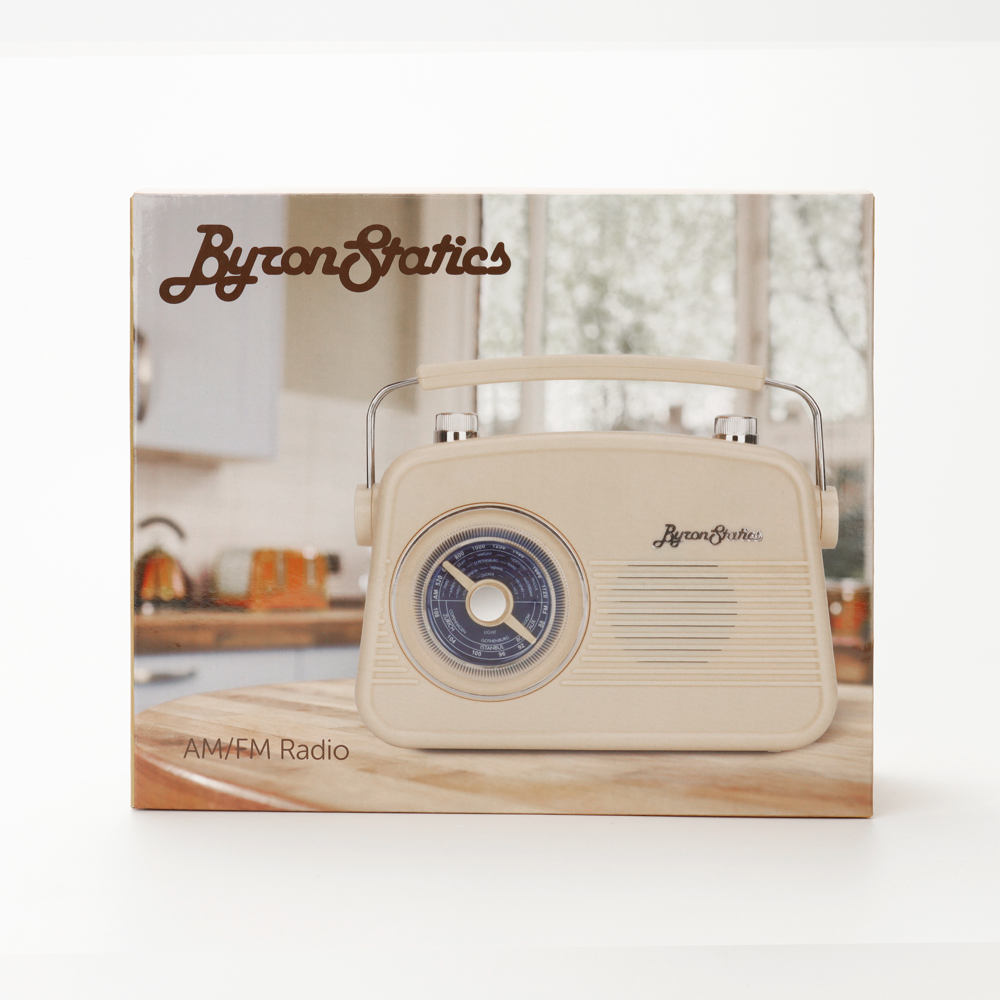
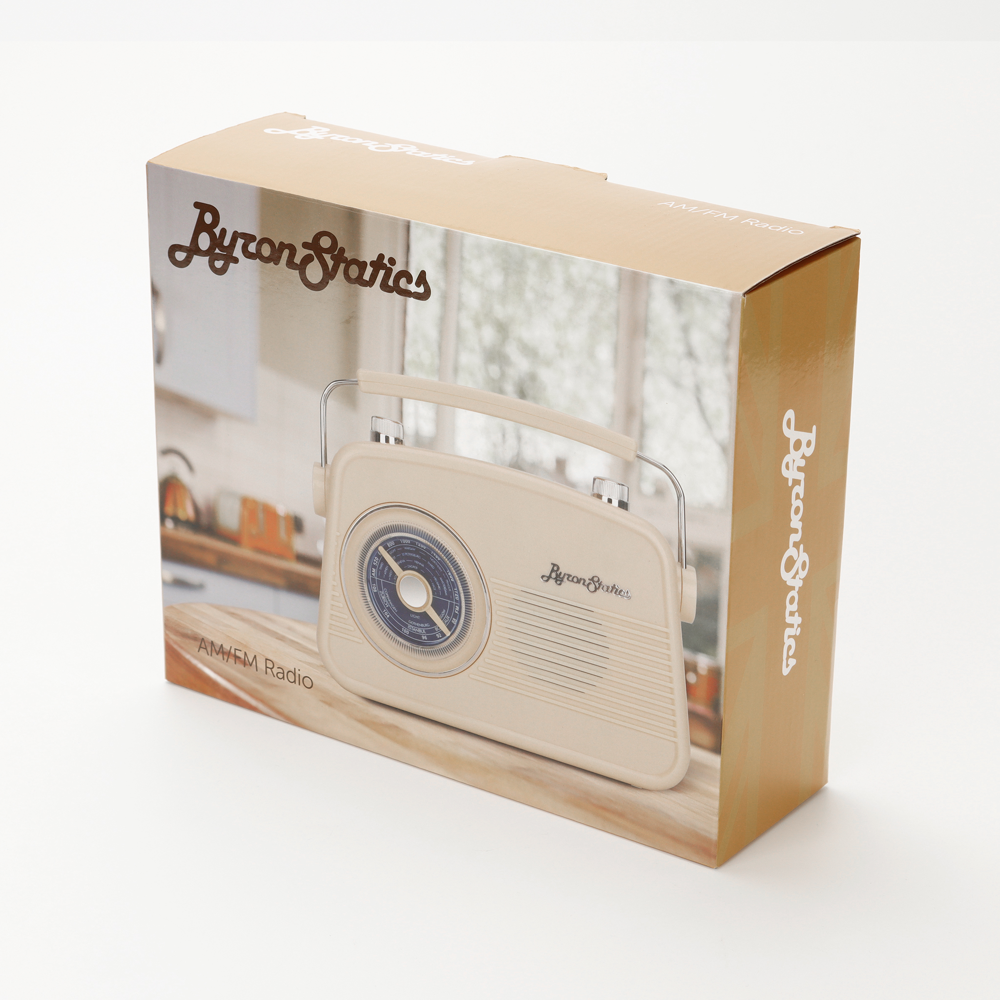
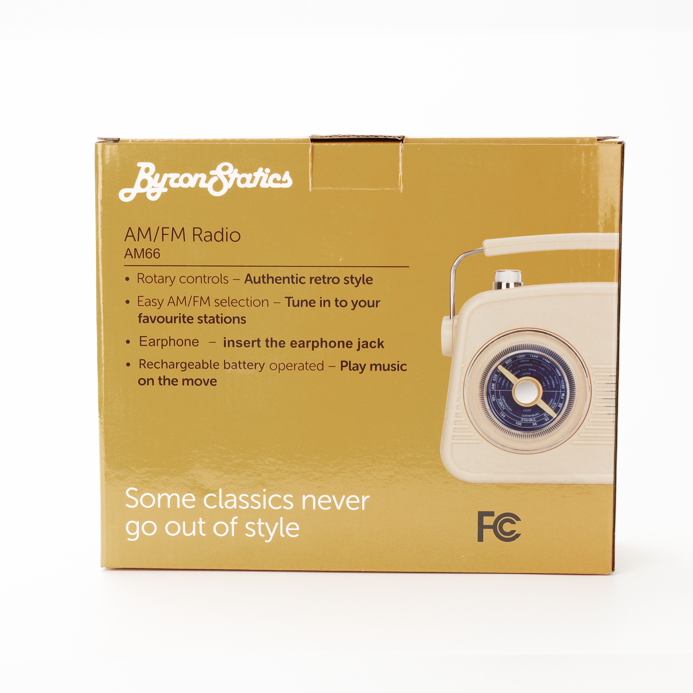

Image: AM66 in Cream, front 3/4 with rotary dial






Click any image to view full size
AM/FM Radio • Vintage Style
AM66
★ 4.5 / 5 (121 reviews on Walmart) — Best Seller
Classic 50s-style portable AM/FM radio with authentic rotary controls and modern USB-C rechargeable battery. Enjoy your favorite stations with vintage style.
Specifications
- Type
- Portable AM/FM 2-band radio
- AM Range
- 520–1720 kHz
- FM Range
- 88–108 MHz
- Power Output
- 4W max
- Controls
- Rotary dials (authentic retro style)
- Antenna
- Telescopic
- Power
- USB-C rechargeable (AC adapter or batteries)
- Audio Out
- 3.5mm headphone jack
- Tuning Display
- City markers (Warsaw, Vienna, Geneva, Copenhagen, etc.)
- Compliance
- FCC
Available Colors
Black
Cream